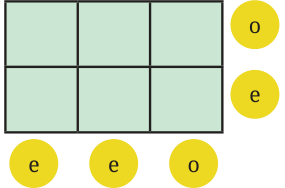
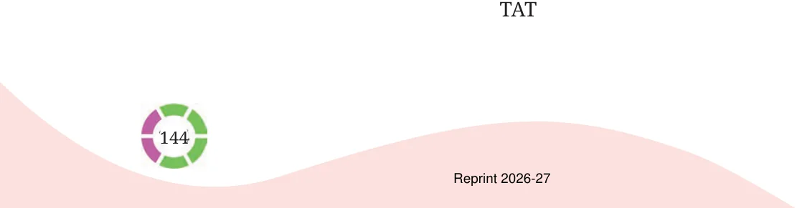

- 1.A light bulb is ON. Dorjee toggles its switch 77 times. Will the
bulb be on or off? Why?
- 2.Liswini has a large old encyclopaedia. When she opened it, several
loose pages fell out of it. She counted 50 sheets in total, each printed on both sides. Can the sum of the page numbers of the loose sheets be 6000? Why or why not?
- 3.Here is \(a 2 \times 3\) grid. For each row and column,

the parity of the sum is written in the circle; ‘e’ for even and ‘o’ for odd. Fill the 6 boxes with 3 odd numbers (‘o’) and 3 even numbers (‘e’) to satisfy the parity of the row and column sums.
- 4.Make \(a 3 \times 3\) magic square with 0 as the magic
sum. All numbers can not be zero. Use negative numbers, as needed.
- 5.Fill in the following blanks with ‘odd’ or ‘even’:
- (a)Sum of an odd number of even numbers is ______
- (b)Sum of an even number of odd numbers is ______
- (c)Sum of an even number of even numbers is ______
- (d)Sum of an odd number of odd numbers is ______
- 6.What is the parity of the sum of the numbers from 1 to 100?
- 7.Two consecutive numbers in the Virahāṅka sequence are 987 and
1597. What are the next 2 numbers in the sequence? What are the previous 2 numbers in the sequence?
- 8.Angaan wants to climb an 8-step staircase. His playful rule is that
he can take either 1 step or 2 steps at a time. For example, one of his paths is 1, 2, 2, 1, 2. In how many different ways can he reach the top?
- 9.What is the parity of the 20th term of the Virahāṅka sequence?
- 10.Identify the statements that are true.
- (a)The expression \(4m - 1\) always gives odd numbers.
- (b)All even numbers can be expressed as \(6j - 4\).
- (c)Both expressions \(2p + 1\) and \(2q - 1\) describe all odd numbers.
- (d)The expression \(2f + 3\) gives both even and odd numbers.
- 11.Solve this cryptarithm:
